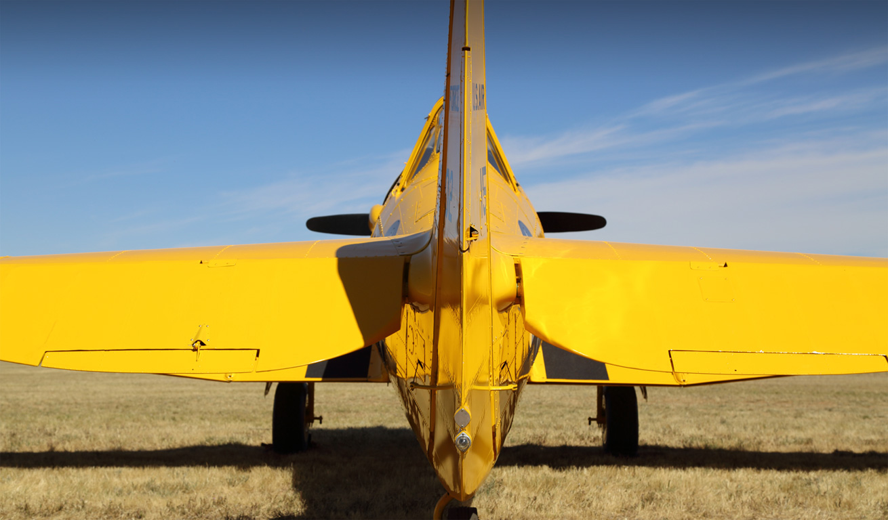

- 
General
- General
- Words and phrases
- SARTIME and SARWATCH
- General phrases
- Frequency management
- Traffic information
- Meteorological information
- Clearances
- Approach and area control
- Starting and initial clearance issue
- Taxi procedures
- Aerodrome movements
- After take-off
- Arrival at aerodrome
- Phraseology
- ATS surveillance system communication
- Speed control
- Traffic information
- Secondary surveillance radar
- Callsigns
Pre-flight planning
operations
Helicopter operations
Emergency procedures
resources
Last updated: 27 March 2015
© 2015 Civil Aviation Safety Authority Australia
Uncontrolled when printed.
Plan your route thoroughly, and carry current charts and documents. Always check ERSA, NOTAMs, and the weather, BEFORE you fly. The VFRG does not replace current operational maps and charts.